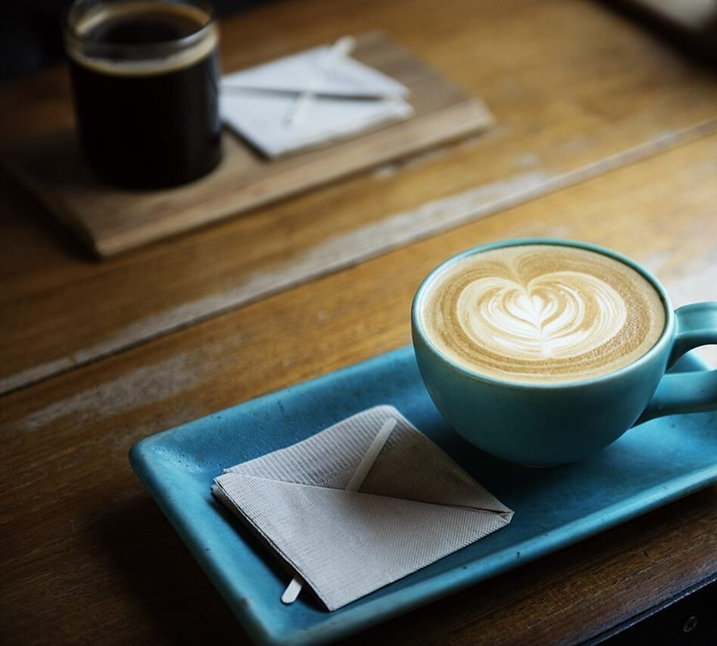

制作側の連想
冷却塔の断面を、六つに分ける
このサイトは、冷却塔を縦に割った姿を図にしたつもりで作りました。六つの部位に番号をふり、上の図と並べています。制作側の連想で、お店の理念・由来とは無関係です。実際の設備や製品の仕様を示すものではなく、お店にこうした設備があるという意味でもありません。
凡例
六つの部位
- 1送風ファン塔の天辺で回り、下から上へ空気を引き上げる羽根。
- 2散水装置充填材の上に並び、水を均等に降らせる管とノズル。
- 3充填材水の流れを細かく広げる、波打つ板の層。
- 4ルーバー塔の下部の側面にある、空気の取り入れ口になる斜めの板。
- 5下部水槽落ちてきた水を受けて溜める、いちばん下の槽。
- 6外壁パネル塔の外側をぐるりと囲み、内部を覆う殻。
ギャラリー(イメージ)
コーヒーのある写真



写真はコーヒーのイメージです。お店のものではなく、お店で提供している商品を示すものでもありません。
ギャラリー(イメージ)
豆と道具の写真


いずれもフリー素材のイメージです。
ギャラリー(イメージ)
丸いパンの写真


写真はパンのイメージです。お店で提供している商品を示すものではありません。
ご案内
お店のこと(確認できたものだけ)
| 所在地 | 〒440-0014 愛知県豊橋市南牛川１丁目１４−１４ |
|---|---|
| 電話 | 準備中 |
| 営業時間 | 準備中 |
| 定休日 | 準備中 |
| ご予約 | 準備中 |
| 駐車場 | 準備中 |
| SNS | Instagram @kissa.toi |